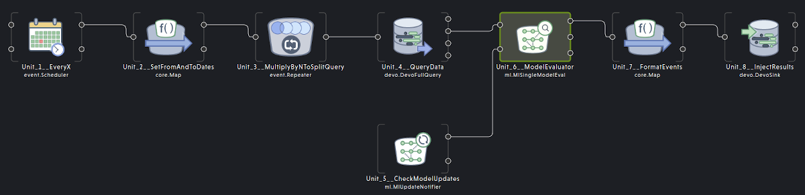

Entity classification with Flow#
This tutorial shows how to evaluate a machine learning model using the Devo Platform’s very own correlation engine: Flow.
We will use the model developed in the tutorial Entity classification (kmeans-ONNX) to demonstrate how to classify new data automatically with the desired periodicity.
We will also learn how to subscribe to updates of the model itself in order to have the latest improvements of its training.
Requirements#
Devo table
demo.ecommerce.data.ML model from the tutorial entity classification registered in the Devo platform.
Create the Flow#
One of the uses of Flow is the transformation and manipulation of data through a series of defined steps. The output of one step is the input to the next step(s) and so on. In this way we can define a complex data flow to achieve a desired goal. The set of steps to perform a task is known as context.
Each of steps in a context is represented by a Unit. Flow provides a wide variety of units to perform lot of individual subtasks.
A relevant unit for our use case is the ML Single Model Evaluator which is capable of evaluating an ML model, so we need to create a context that includes this unit, in addition to others.
This is the layout of the context proposed for our task.
We can create the context from scratch, but there is an easier way to do it if we have the context specification, which is our case.
The EvalModelTemplate.json
specification contains all the specification to create the suitable context.
We can import the context from Flow welcome page of Flow application
using the option Import from json, so download it and import it.
{
"id": null,
"description": "",
"name": "EvalModelTemplate",
"type": "app.Context",
"templateFormat": "%mono",
"loggedItems": [],
"variableConf": {
"variables": [{
"id": "d310c38c-pa41-iebc-9cfa-d52483cffdbb",
"name": "OUT_TABLE",
"description": "Devo table to write to.",
"type": "string",
"value": "my.app.evalmodel.demo"
},
...
}
Note
The specification of a context is usually very long, here it has been shortened for tutorial readability.
At this point we should have a ready-to-use context that reads data from the
demo.ecommerce.data table, evaluates it through an ML model and writes the
results to the my.app.evalmodel.demo table, all just out of the box
importing a context specification.
But a context does not have to be static, it can be adjusted by variables and its units are also configurable, let’s see how.
Variables#
Although the context is ready out of the box after import, we can adjust it by means of a set of variables
From File \ Variables option of the main menu of Flow application you
can tune the variable values.
NAME |
TYPE |
DEFINITION |
DEFAULT VALUE |
|---|---|---|---|
EVERY |
|
Cron expression to define how often queries will be launched |
|
QUERY_DURATION |
|
Length in milliseconds of the period the query should consider |
|
QUERY_MODULE |
|
Number of chunks to split the query |
|
QUERY_COLUMN |
|
Name of the query column used to split the query into chunks |
|
OUT_TABLE |
|
Name of the table where results will be written |
|
If you want to change the EVERY variable be aware that you must change the
QUERY_DURATION variable accordingly. For instance, if you want to run the
query every 2 hours, QUERY_DURATION should be 7200000
(2h * 60min/h * 60s/min * 1000ms/s).
Units overview#
Let’s see the units of the layout.
- EveryX [event.Scheduler]This unit is configured to start working when the context is run. Everytime this unit sends an event, queries will be launched. To change how often queries should be launched, you can change the value of the Flow variable
EVERY. By default, it is configured to send an event everyday at midnight. - SetFromAndToDates [core.Map]This unit uses the date generated in the previous unit to set the
fromandtotimestamps for the query. The variableQUERY_DURATIONsets thefromtimestamp. By default, it is configured to 24h. - MultiplyByNToSplitQuery [event.Repeater]This unit generates
Nevents for every event received, all of them with the same content except for acounter. We will use that counter to split the results of the query when there are too many values. - QueryData [devo.DevoFullQuery]This is the unit that gets data from the table
demo.ecommerce.datausing the Query Engine and the dates calculated in the SetFromAndToDates unit. We added a module operation to split the query into smaller queries just in case there are too many results to handle in one go.Note that this unit is connected to the ModelEvaluator unit that evaluates the input with a machine learning model, therefore the output of the unit must match the input fields definition of the ML model, i.e., same name and type. In our case, the model expects an array of fivefloat4elements namedfield_0, so we built the query with that output:QueryData::General::Query#select ? as counter from demo.ecommerce.data where isnotnull(clientIpAddress) where (abs(hash(#{QUERY_COLUMN}))) %% #{QUERY_MODULE} = counter select hour(eventdate) as hour, minute(eventdate) as minute, second(eventdate) as second, clientIpAddress, userAgent group every 8h by clientIpAddress select str(clientIpAddress) as sourceIp, float4(size(collectcompact(hour))) as unique_hours, float4(size(collectcompact(minute))) as unique_mins, float4(size(collectcompact(second))) as unique_seconds, float4(size(collectcompact(userAgent))) as unique_user_agents, float4(avg(bytesTransferred)) as bytestransferred, [unique_hours, unique_mins, unique_seconds, unique_user_agents, bytestransferred] as field_0 - CheckModelUpdates [ml.MlUpdateNotifier]This unit keeps your ML model updated. If you upload a new version of your model keeping the name, your context will refresh the model image to start using the new one.If you do not plan to update your model ever, you can remove this unit.
- ModelEvaluator [ml.MlSingleModelEval]This unit evaluates the specified model with the input data and writes the result in a new field with the specified output name.The unit was pre-configured to use a model named
entity_classification_ip, which is the name of the model built in the entity classification tutorial. You can change the model to use in theModel Nameparameter of the unit, but note that you must update the query accordingly to match the fields of both. - FormatEvents [core.Map]This unit adds/removes/reformats fields to get an event that fits the expected format in the output table.
- InjectResults [devo.DevoSink]Writes the enriched events back to Devo to
OUT_TABLEtable, defaults tomy.app.evalmodel.demo.
Note
Refer to Flow documentation to learn more about Flow and their units.
Remove query splitting#
In this tutorial we split the query into N smaller queries which is a good approach if you expect a large amounts of data. if it is not the case you can remove the splitting.
To do so in the QueryData unit remove the counter in Parameters
section and modify the query by removing these lines:
select ? as counter
from demo.ecommerce.data where isnotnull(clientIpAddress)
where (abs(hash(#{QUERY_COLUMN}))) %% #{QUERY_MODULE} = counter
select
hour(eventdate) as hour,
minute(eventdate) as minute,
second(eventdate) as second,
clientIpAddress,
userAgent
group every 8h by clientIpAddress
select
str(clientIpAddress) as sourceIp,
float4(size(collectcompact(hour))) as unique_hours,
float4(size(collectcompact(minute))) as unique_mins,
float4(size(collectcompact(second))) as unique_seconds,
float4(size(collectcompact(userAgent))) as unique_user_agents,
float4(avg(bytesTransferred)) as bytestransferred,
[unique_hours, unique_mins, unique_seconds, unique_user_agents, bytestransferred] as field_0
Without spliting you can still adjust the frequency of the query by changing the
EVERY and QUERY_DURATION variables according to your needs.